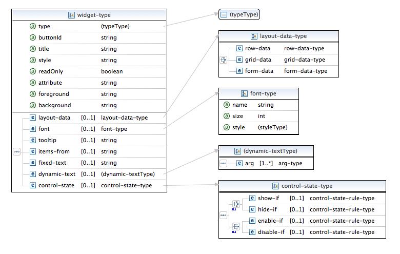

The UI component which needs to be configured in conjunction with the
resource manager control is the Launch Tab, which is actually
the main area of the Resources Tab, one of the six tabs
comprising the Run Configuration wizard or the seven tabs
comprising the Debug Configuration wizard. The purpose of this
component is to allow the user to set up the job by providing values
relating to resource requirements or to the properties of the job in
general. In other words, it is in this component that the user can set
the values on the
attribute
elements making up the configurable environment as defined in the XML.
Specifying the composition and layout of this component can be tricky
and tedious because it deals with widgets defined by the Eclipse
JFace
library and with their underlying implementation in
SWT
. We intend in the near future to provide some standard "templates"
for typical widget groups that can be cut and pasted into the XML
definition. Some of this can already be achieved by importing into the
workspace a provided definition (such as for the PBS resource manager)
and modifying it or borrowing from it. This is, in fact, the approach
demostrated in the tutorial.
Throughout the following, it may generally be assumed that
fields such as style, foreground, background,
etc., take string equivalents of the corresponding SWT
constants (e.g., "SWT.LEFT", "SWT.VERTICAL", "SWT.NONE") which can be
OR'd (using "|") wherever they would be in Java code. We will not
exhaustively specify here which constants pertain to which widgets,
because in most cases we have tried to reflect very closely the names
of the SWT object types and fields, and this information
can be found by consulting the Javadocs relative to the widgets in
question.
As seen from this top-level specification, the Launch Tab can have any
number of
dynamic
tab-controllers, "dynamic" meaning configurable from the XML, which
will discuss in more detail in the following paragraphs.
There is also a fixed
import
controller type (implemented as an extension/subclass of the dynamic
controller, in order to provide uniform handling of the environment);
this component allows you to browse the workspace to set a custom
script as the one to run. Its main text area widget is read-only; any
editing of the script must be done through the workspace editor. The
browse is local only, so remote scripts should first be imported into
a local project in the workspace (using the remote systems import
wizard), and then captured by this controller's browse button.
The configurable part of the import tab is an optional attribute viewer for selecting the variables from the environment which you wish to pass to the launch command along with the script. The values set here should correspond to whatever the script contains; they are set for the benefit of the internal consistency of the PTP client, and do not override those hard-coded in script. For an example, see the Import PBS Script tab.
The
dynamic
controllers belong to the
tab-controller-type, which contains an arbitrary number of
tab-folder,
composite,
widget,
browse,
button-group,
action,
or
viewer
elements; as will be seen shortly, the first two, which are
"containers", are potentially recursive elements, so that one can nest
widgets in the usual manner. For all intents and purposes, the
tab-controller-type
is the same as a
composite, but without the group attribute and with the extra field for
controlling shared widgets.
The includeWidgetValuesFrom field is important. By default, it
is set to empty, meaning that the subset of the total resource manager
environment represented by the controller's widgets is all that will
be passed to the actual job configuration when the job is launched
from this tab. This behavior can be changed by giving a
comma-delimited list of the
title
values for other controllers. In this case, the configuration for the
job, when the "Run" button is pressed with this controller being the
visible one, will also include all the attributes
valid for the listed but currently invisible controllers.
ATTRIBUTE NAMES vs VALUES
While this field controls the inclusion or exclusion of attribute names in the configuration, their values are always shared across the controllers (there is only one environment); thus if a variable value is changed on one controller, and this variable is also exposed on another, the value for that variable will also change on the other controller when it becomes visible; similarly, if the user switches off a controller to another having only a subset of the first controller's variables, the variables not represented on the second controller will become undefined or return to their defaults.
Note that the union of valid names is not transitively closed; that is, if Tab1 has includeWidgetValuesFrom="Tab2", and Tab2 similarly has includeWidgetValuesFrom="Tab3", Tab1 will get only the valid values local to Tab2. Note also, that if there are names which intersect with strictly local widget targets, the local settings (visibility, selection, enablement) still determine whether they belong in the set of valid attribute names.
The showViewConfig and showViewExcluded fields allow
control over whether the "View Configuration" and "View Excluded"
buttons appear at the bottom of the tab (the "View Script" button
appears if the configuration contains a
script
element). showViewConfig is true by default; this button brings
up a scrolling dialog which allows you to inspect the current
configuration (that is, the one relevant to the visible controller). showViewExcluded
is by default false, and should only be set if the resource manager
processes attributes discovered by a command at run
time; this dialog allows you to see which ones have been marked
invisible; unlike invisible predefined attributes,
which are always included, invisible discovered
attributes are always excluded from the configuration and thus
do not persist across resource manager sessions.

The
tab-folder
is a container which looks like a file-folder, with tabs running
across the top or bottom (style includes SWT.TOP, SWT.BOTTOM).
Each tab label corresponds to a
tab-item
which provides the actual visible content. The
tooltip
pertains to the entire folder.
The
tab-item
is another all-purpose "container" in which all widget types can be
embedded, but distinguished from the composite
in that it can only be the child of a
tab-folder
and that it can have a tooltip (which appears on the tab).
As with
composite
(see below), the tab folder and tab item take
layout
and
layout-data
elements; these closely reflect their
SWT
objects and types; for further explanation we refer the reader once
again to the relevant Javadocs.

The main container, of course, is the
composite
; its sub-type, the group (group="true"), allows for decoration
and a title, while the simple composite acts as a widget holder and
has no visible characteristics, though it does have a layout. As is
evident, composites can be contained in composites and tab-items, and
tab-folders can be contained in composites.
It should be evident that all the XML elements corresponding to UI SWT
control
types have been given
control-state
children.
The purpose of these elements is to provide an optional way of setting
the enabled and/or visible states of the control on the
basis of the state of button (checkbox/radio) selection or the value of an attribute. One can
define two such elements per control, using one of the show/hide or
enable/disable pairs. Each of these is associated with a
control-state-rule:
The basic rule is defined by its attributes. Rules can specify either:
or
Only one combination of button and selected or attribute and value can be specified in a rule. Rules can be nested to an arbitrary depth to form clauses governed by the logical operators.
When using a rule containing button and selected, the
"trigger" button control must have an id unique to the resource
manager configuration. This will be assigned via the buttonId
attribute on the
widget
corresponding to the button (true also for the buttons nested in a
button-group
). For these rules, a
SelectionListener
is created for this target which subscribes to all the controls in the
rule; when it receives an event, it evaluates the rule, and if the
result is true, takes the associated action on this target.
For rules that spectify attribute and value, the attribute value will be checked when the attribute or any control is updated.
Here is an example which sets the enabled and visible properties of both a text field and a related checkbox:
<widget type="checkbox" buttonId="002" title="Host list:" attribute="checked002">
<layout-data>
<grid-data horizontalAlign="SWT.LEFT" verticalAlign="SWT.TOP"/>
</layout-data>
<control-state>
<show-if button="001" selected="true"/>
</control-state>
</widget>
<widget type="text" style="SWT.V_SCROLL | SWT.BORDER" attribute="host_list">
<layout-data>
<grid-data horizontalAlign="SWT.FILL" verticalAlign="SWT.FILL" horizontalSpan="2" grabExcessHorizontal="true"
grabExcessVertical="true"/>
</layout-data>
<control-state>
<show-if button="001" selected="true"/>
<enable-if>
<and>
<rule button="001" selected="true"/>
<rule button="002" selected="true"/>
</and>
</enable-if>
</control-state>
</widget>
Note also that this implicit dependency graph is checked for cycles; the building of the UI tab will be aborted if such a cycle is discovered.
BEST PRACTICE: CONTROL STATE
An invisible property should be assigned to each checkbox which controls the state of other widgets (e.g., checked002 in the example above); this will allow you to restore the state of the tab correctly when it is rebuilt or re-initialized.
We now come to the five non-container widget elements with functional
characteristics. The first of these is the
widget, which comprises a number of simple widget types.

The type of the widget can be one of the following:
label |
fixed text for display |
text |
area for entering/editing text |
checkbox |
corresponds to a boolean choice |
radiobutton |
usually used in connection with button-group |
spinner |
provides a continuous range of integer values |
combo |
select from a list of items |
Not all attributes and elements of the
widget
descriptor are applicable to all types.
| title | used with checkbox and radiobutton
widgets for the button label. |
| style | carries the SWT style constants appropriate to
the widget type. |
| readOnly | applies to text, spinner and combo
widgets; the text area in this case is not editable. |
| attribute | applies to all widgets except label; the name
of the attribute whose value should be set on the basis
of the widget's "selected" value or text.Note: use of this attribute is mutually exclusive with the fixed-
and dynamic-text elements. |
items-from |
applies to the combo widget; indicates an
attribute value (of type java.util.Collection)
to use to populate the items.Note: if a combo widget saves its value to an attribute and the present element on the widget descriptor is not set, the attribute will be checked for non-empty choice or items-from values,
which then will be used to populate the combo items; the items-from
field on the widget is for added flexibility (for instance, linking
up a target attribute with another attribute providing the list of
choices). |
fixed-text |
applies to the label and (read-only) text
widgets; text is resolved once and remains constant thereafter. |
dynamic-text |
applies only to (read-only) text widgets; text
is resolved each time there is an update of a value from the Launch
Tab. |
Widget foreground, background (color) and font are in principle configurable, though the font setting may not always work. The tooltip will appear on the widget whereever it usually does.
The button group provides an explicit selection of a single value
based on a mutually exclusive set of button labels. Just as with the
widget, one uses attribute to indicate what attribute
value to set. The
button
elements, which can be arranged horizontally or vertically using the style
attribute (SWT.HORIZONTAL, SWT.VERTICAL), will be
widget
elements whose type is either checkbox or radiobutton
(if a different widget type is given, an error will occur); the attribute
attribute on the individual button will be ignored. Radio buttons are
"sticky" in the sense that once they are selected, they cannot be
"unchecked" until a different button in the group is selected. It is
thus advisable always to provide a default value for the
attribute associated with the group value if radio buttons are used.
If check boxes are used, they can be individually checked on and off
(one at a time), thus allowing for the value of the group to be
potentially empty.
Below is an example of a button group using radio buttons, disposed vertically.

A special widget-pair -- a text widget followed by a push button --
allowing the user to browse directories or files from either the local
or remote file system. Aside from the fields shared with the
widget
type, we note the following:
| directory | limit the browse widget to directories. |
| uri | have the browse widget set a URI as the text
(default is false, in which case the text is an absolute path). |
| localOnly | limit the browse widget to the local file
system (otherwise, the choice of local or remote is enabled). |
Control ids,
layout
and
control-state
are specified as belonging to either the text or the button. Style
applies only to the text widget.

A push button which is associated with a
button-action
command. The
button-action
specifies the name of a command (
action
) defined in the XML; this can be one of the
start-up
or
shut-down
commands, or a special
button-action
command (note that it cannot, however, be a (uu)id
command, as the Launch Tab is not coupled to any submitted jobs); the
button-action-type
also indicates whether the variable affected by the command should be
cleared prior to the command execution, and whether the launch tab
should be refreshed (default is true) afterward.
The last of the widget types, the
attribute-viewer, displays visible attributes in a table or tree
viewer, with the value columns as editable widgets. The type of cell
editor is determined implicitly here by the type of the
attribute; the presence of a combo editor is determined by an
attribute whose
choice
or
items-from
element is defined. (This is the only viable possibility for a combo
in the table, as there would also need to be a target to save the
selected item to, viz., the value of this same attribute.)
Each entry in the viewer is provided with a checkbox to indicate which attributes have been chosen (and thus marked valid). A checkbox is also placed above the viewer to allow for filtering the unchecked items. The viewer outputs its values to the environment. The name of the viewer is also stored against a string of all selected values, constructed from a template (further discussion at the end of this section).
The viewer type can be either "table" or "tree"; in the case of the tree, the type, default, status and description fields of the attribute are displayed as collapsible child rows hanging off the main name entry. Either table or tree can have up to six columns whose names/types are based on the following attribute fields:
| Name |
| Value |
| Type |
| Status |
| Default |
| Description |
These can appear in any order. There is a slight difference in how these columns are treated, depending upon whether tree or table is chosen as type. For table type, the value of the field simply appears in the corresponding column:

In the tree type, the
name
field displays all fields except
value
as children;
value
always appears as a separate column on the same row as the name (it
contains the cell editor). If the viewer also has the column
corresponding to the child field, that field value appears in that
column;
Otherwise, the child fields display their value in the value column
along with the actual
value
field:

Tooltips for the column appear when hovering over the column header. (A caveat on the foreground and background settings for this type: they are exposed here but may not work as expected: these are currently applied to the column through the cell label provider; foreground does not change the font color but applies the color to the entire cell.)
sort is done on the name field/column. This is a toggle sort, such that alternate clicks reverse the sort direction. headerVisible and linesVisible control the look of the table. tooltipEnabled enables column-viewer label provider tooltip support. The tooltip defined for an attribute will appear on the row of the table or the parent node of the tree. The attribute description will also appear as a tooltip on the description columns if they exist.
Control over the actual contents of the viewer is achieved through the
viewer-items-type
; one can here explicitly list attributes for inclusion
using the
include
element, or one can set one or both of the all attributes; in
the latter case, attributes can be excluded from the
set using
exclude. The initialAllChecked attribute, which defaults to true, indicates
that if the attribute is new or undefined from a previous
session, it will appear as checked; turn this off if you want new
attributes to appear at first as unchecked.
An attribute bearing the name given to this widget is written to the
environment at each update/refresh; the value of the attribute is a
string formed from the selected (checked) rows of the table using the
template-type
(the
value
element). The pattern can be any literal string embedding @name
and @value tags as placeholders for the row's name and value;
for instance, '@name="@value"' would generate a string of name-value
assignments. The default separator between patterned segments
is a single space.
Below is a fuller example of the tree version of the attribute viewer. The text area above it displays the current value of its templated pattern string. The child rows reporting status, default, etc., cannot be selected or unselected (only the parent row can). Hovering over the name (here walltime) displays the tooltip.